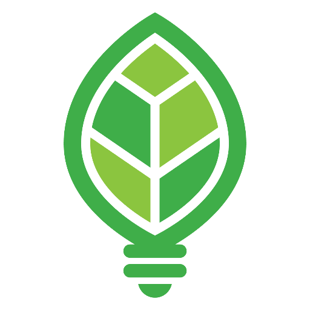

<!DOCTYPE html>
<html lang="en">

<head>
    <meta charset="utf-8">
    <meta content="width=device-width,initial-scale=1.0,minimum-scale=1.0,maximum-scale=1.0,user-scalable=no,target-densitydpi=160"
          name="viewport">
    <title>Amie Kuttruff &ndash; Home</title>
    <link rel="stylesheet" href="http://yui.yahooapis.com/pure/0.5.0/pure-min.css">
    <link rel="stylesheet" href="http://yui.yahooapis.com/pure/0.5.0/grids-responsive-min.css">
    <link rel="stylesheet" type="text/css" href="https://fonts.googleapis.com/css?family=Lato">
    <link rel="stylesheet" type="text/css" href="https://fonts.googleapis.com/css?family=Lato:300">
    <link rel="stylesheet" href="css/ionicons.css">
    <link rel="stylesheet" href="css/style.css">
    <link rel="shortcut icon" href="./favicon.ico" type="image/x-icon">
</head>

<body>
<div id='root'></div>
<!--<div id="layout" class="pure-g">
  <div class="sidebar pure-u-1 pure-u-md-1-4">
    <div class="header">
      <h1 class="name">Amie Kuttruff </h1>
      <h2 class="bio">Software engineer,<br>violinist.<br><br></h2>
      <h2 class="location">PDX, OR</h2>
      <nav class="nav">
        <ul class="nav-list">
          <li class="nav-item">
            <a href="http://github.com/akuttruff" target="_blank"><i class="icon ion-social-github"></i></a>
          </li>
          <li class="nav-item">
            <a href="http://twitter.com/amiekuttruff" target="_blank"><i
              class="icon ion-social-twitter"></i></a>
          </li>
          <li class="nav-item">
            <a href="http://instagram.com/akuttruff" target="_blank"><i
              class="icon ion-social-instagram-outline"></i></a>
          </li>
        </ul>
      </nav>
    </div>
  </div>

  <div class="content pure-u-1 pure-u-md-3-4">
    <div class="resume">
      <h1 class="resume-subhead">Work</h1>
      <div class="title"></div>
      <div class="title">
        <a href="https://renewfinancial.com/" target="_blank">RENEW FINANCIAL</a>
        <div class="time">(October 2017 - present)</div>
        Software Engineer II
      </div>
      <div class="description">
        <ul>
          <li>Builds user interfaces that make renewable energy and energy-efficiency improvements accessible to homeowners</li>
          <li>Writes clean, testable, modern JavaScript with React.js + Redux within a legacy AngularJS codebase</li>
          <li>Ensures quality software by writing behavior-driven unit tests with Jasmine, Karma, and Enzyme</li>
          <li>Maintains a modern JavaScript ecosystem with tools like Webpack, Babel, ESLint, and Gulp</li>
          <li>Enthusiastically supports group and pair programming to promote open communication within an
            agile product development environment
          </li>
        </ul>
      </div>
    </div>

    <div class="resume">
      <div class="title"></div>
      <div class="title">
        <a href="http://www.jamasoftware.com" target="_blank">JAMA SOFTWARE</a>
        <div class="time">(February 2016 - October 2017)</div>
        Software Engineer, Mid-Level
      </div>
      <div class="description">
        <ul>
          <li>Worked with UX and Product teams to implement market-differentiating features for requirements
            management software
          </li>
          <li>Refactored and improved a Java and EXT.js legacy codebase using React.js, Fluxxor, and Redux</li>
          <li>Developed code using test- and behavior-driven techniques with Jasmine, Karma, JUnit, and Enzyme</li>
          <li>Contributed to the development of an autoscaled Java microservice using AWS ECS</li>
        </ul>
      </div>
    </div>

    <div class="resume">
      <div class="title"></div>
      <div class="title">
        <a href="http://getlittlebird.com" target="_blank">LITTLE BIRD</a>
        <div class="time">(January 2014 - December 2015)</div>
        Software Engineer
      </div>
      <div class="description">
        <ul>
          <li>Worked with Ruby, Clojure, ClojureScript, React.js, HTML/CSS, JavaScript, MongoDB, PostgreSQL
          </li>
          <li>Developed front- and back-end application features for network graph analysis software</li>
          <li>Scripted browser testing automation for QA</li>
          <li>Created data visualizations using D3 and Gephi</li>
          <li>Managed branched projects with Git in an agile environment</li>
        </ul>
      </div>

      <h1 class="resume-subhead">Education</h1>
      <div class="edu">
        <ul>
          <li>
            <a href="http://www.tufts.edu" target="_blank">Tufts University</a> — B.A. International Letters
            and Visual Studies (2009)
          </li>
          <li>
            <a href="http://www.uni-tuebingen.de" target="_blank">Universit&auml;t T&uuml;bingen</a>
            — German Studies (2005)
          </li>
        </ul>
      </div>
      <div class="title"></div>
      <h1 class="resume-subhead">Music</h1>
      <div class="description">
        <ul>
          <li>Classical violinist available for orchestra or chamber ensemble work</li>
          <li><a href="mailto:amie.kuttruff@gmail.com">Email</a> for more information</li>
        </ul>
      </div>
    </div>
  </div>
</div>-->
</body>
</html>
